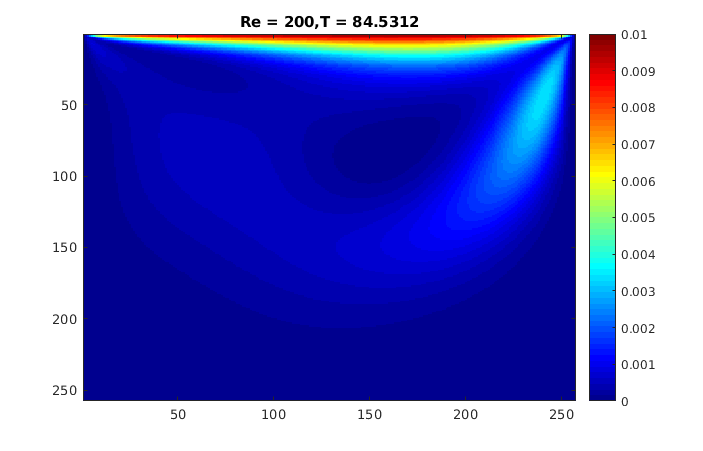
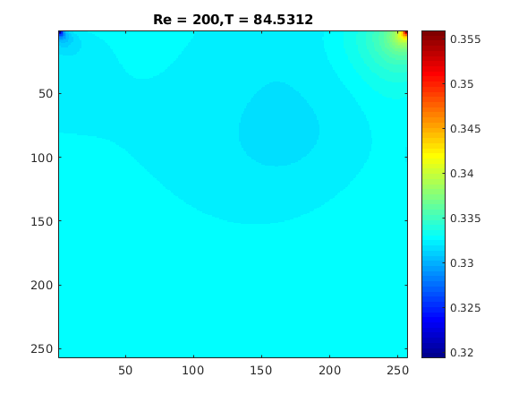
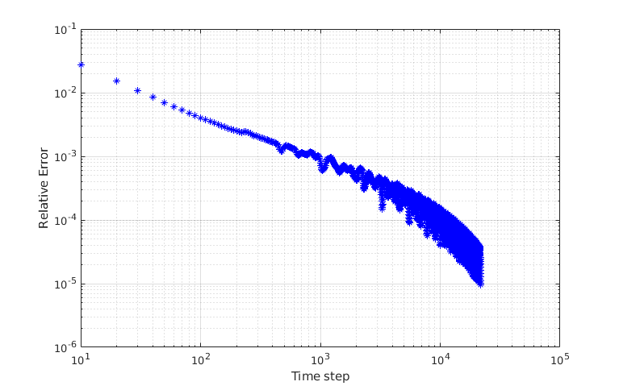

Contents
%----------------------------------------------------------------------------------------------- %%%% 2d Cavity Lid-driven Flow simulation MATLAB Code (for-loop implement version) %%%% Author: Yang Yang %%%% Date : Tue Apr 7 2015 %%%% %%%% Background: %%%% This code is part of Yang Yang's B.Eng. Thesis works, %%%% As a verify of Yang Yang's Algorithms and Codes' correctness. %%%% %%%% Copyright: %%%% You can copy and use this code for any purpose, but you must declare %%%% that the original version of this code was written by Yang Yang %%%% %%%% Disclaimer of Warranty: %%%% Maybe, there are many mistakes in this code, both in fundamental theory and programming, %%%% because of the limitation of my own knowledge and strength. %%%% As a result: THESE DOCUMENTS AND CODES ARE PROVIDED "AS IS" WITHOUT WARRANTY OF ANY KIND. %%%% I MAKE NO WARRANTIES, EXPRESS OR IMPLIED, THAT THEY ARE FREE OF ERROR. %------------------------------------------------------------------------------------------------
Programming Initialization
close all; clear all; clc; tic; feature accel on; % Acceleration on feature jit on; % Just in time on fprintf('Programming LidDrivedFlowMain Running ... \n');
Programming LidDrivedFlowMain Running ...
Global Varibles
global Q Lx Ly Nx Ny U ev omega delta_x delta_y ... delta_t rho_0 c Re mu tau_f Dimension % Model's parameters Dimension = 2; % Problem's Dimension Q = 9; % Qian 9 D2Q9 Velocity model Lx = 1.; % Length in x direction Ly = 1.; % Length in y direction Nx = 256; % grid numbers in x direction (must equal to that in y) Ny = 256; % grid numbers in y direction U = 0.1; % velocity of lid rho_0 = 1.; % reference density Re = 200 ; % Reynold number % Discrete velocity : ev = [0 1 0 -1 0 1 -1 -1 1 0 0 1 0 -1 1 1 -1 -1 ]; % weight in equilibrium distribution function : omega= [4./9. 1./9. 1./9. 1./9. 1./9. ... 1./36. 1./36. 1./36. 1./36.]; % Parameters expressions delta_x = Lx/Nx ; % space step interval delta_y = delta_x ; % grid step length in each direction must equal c = 1 ; % speed of lattice sound (must equal to 1) delta_t = delta_x / c ; % time step interval mu = U * Lx / Re ; % Dynamic viscosity tau_f = 3. * mu / (c^2. * delta_t) + 1./2. ; % Relaxaition time
Local Varibles
Macroscopic
rho = zeros(Nx+1,Ny+1); % macro density u = zeros(Nx+1,Ny+1,2); % macro velocity u_temp = u; % macro temporary velocity % Mesoscopic f = zeros(Nx+1,Ny+1,Q); % distribution function f_temp = f; % temporary distribution function feq = zeros(Q,1); % equilibrium distribution function feq_w = feq; feq_f = feq; % Residual in compution (Breaking criteria) Control CheckResidualInterval = 10; % check interval residual = 1e-5; % breaking criteria tmax = 1e7; % max time step epsilon = 0; ht = figure('name','Erro VS Time'); % Relative Error time plot set(ht,'Color',[1 1 1],'menubar','none') % Outputs control OutputsInterval = 50; files_name = 'LidDrivedFlow'; % Plot control PlotInterval = 10; plot_name1 = 'Velocity Field'; plot_name2 = 'Pressure Field'; h = zeros(1,2); h(1) = figure('name',plot_name1); h(2) = figure('name',plot_name2); set(h(1),'Color',[1,1,1],'menubar','none'); set(h(2),'Color',[1,1,1],'menubar','none'); % Programming log file_log = 'LidDrivedFlow';
Initial the flow field
[rho,u,f] = initialfield(rho,u); f_temp = f;
main loop to update flow field
ip = zeros(1,1); jp = zeros(1,1); for t=1:tmax % evolution Lattice Boltzmann Equation for i = 2:Nx for j = 2:Ny for k = 1:Q ip = i - ev(1,k); jp = j - ev(2,k); feq = f_eq(rho(ip,jp), u(ip,jp,:)); % compute f_equilibrium f_temp(i,j,k) = f(ip,jp,k) + (feq(k)-f(ip,jp,k))/tau_f ; % Evolution equation end end end % compute macroscopic field variables u_temp = u; u(2:Nx,2:Ny,:) = 0; rho(2:Nx,2:Ny) = 0; f = f_temp; for i = 2:Nx for j = 2:Ny for k = 1:Q rho(i,j) = rho(i,j) + f(i,j,k); % rho = Sigma f_alpha u(i,j,1) = u(i,j,1) + f(i,j,k).*ev(1,k); u(i,j,2) = u(i,j,2) + f(i,j,k).*ev(2,k); % rho*u = Sigma e_alpha*f_alpha end end end for i = 2:Nx for j = 2:Ny u(i,j,:) = u(i,j,:) / rho(i,j); % u = rho*u / rho end end % BCs % left for j = 2:Ny rho(1,j) = rho(2,j); % Using neighbor point's density u(1,j,:) = 0; feq_w = f_eq(rho(1,j), u(1,j,:)); % here u(1,j,:) = 0 all the time feq_f = f_eq(rho(2,j), u(2,j,:)); for m = 1:Q f(1,j,m) = feq_w(m) + (f(2,j,m) - feq_f(m)); end % right rho(Nx+1,j) = rho(Nx,j); u(Nx+1,j,:) = 0; feq_w = f_eq(rho(Nx+1,j), u(Nx+1,j,:)); feq_f = f_eq(rho(Nx,j), u(Nx,j,:)); for m = 1:Q f(Nx+1,j,m) = feq_w(m) + (f(Nx,j,m) - feq_f(m)); end end % top for i = 1:Nx+1 rho(i,Ny+1) = rho(i,Ny); u(i,Ny+1,1) = U; % lid velocity u(i,Ny+1,2) = 0; feq_w = f_eq(rho(i,Ny+1), u(i,Ny+1,:)); feq_f = f_eq(rho(i,Ny), u(i,Ny,:)); for m = 1:Q f(i,Ny+1,m) = feq_w(m) + (f(i,Ny,m) - feq_f(m)); end %bottom rho(i,1) = rho(i,2); u(i,1,:) = 0; feq_w = f_eq(rho(i,1), u(i,1,:)); feq_f = f_eq(rho(i,2), u(i,2,:)); for m = 1:Q f(i,1,m) = feq_w(m) + (f(i,2,m) - feq_f(m)); end end % erro if( mod(t,CheckResidualInterval) == 0 ) epsilon = RelativeErro(u, u_temp); % call function to compute Relative error fprintf('Time Step = %d; Velocity field integral Relative Error = %.10E \n', t,epsilon); figure(ht) loglog(t,epsilon,'b*'); xlabel('Time step'); ylabel('Relative Error'); hold on; grid on; drawnow; if (epsilon < residual && t>(5000)) break; end end % plot if( mod(t,PlotInterval) ==0 ) plotfunction(h, rho, u, t); end % outputs if( mod(t,OutputsInterval) ==0 ) file_name = FieldOutputs(rho, u, t, files_name); fprintf('Time Step = %d; data saved as: %s \n', t,file_name); end end figure(ht); hold off; % hold off figure handle ht
Time Step = 10; Velocity field integral Relative Error = 2.7473902269E-02 Time Step = 20; Velocity field integral Relative Error = 1.5259469308E-02 Time Step = 30; Velocity field integral Relative Error = 1.0792774334E-02 Time Step = 40; Velocity field integral Relative Error = 8.4588126239E-03 Time Step = 50; Velocity field integral Relative Error = 7.0207479293E-03 Time Step = 21550; data saved as: LidDrivedFlow_21550.dat Time Step = 21560; Velocity field integral Relative Error = 2.4111096792E-05 Time Step = 21570; Velocity field integral Relative Error = 2.2186345668E-05 Time Step = 21580; Velocity field integral Relative Error = 2.0218467686E-05 Time Step = 21590; Velocity field integral Relative Error = 1.8236586539E-05 Time Step = 21600; Velocity field integral Relative Error = 1.6279292073E-05 Time Step = 21600; data saved as: LidDrivedFlow_21600.dat Time Step = 21610; Velocity field integral Relative Error = 1.4399929052E-05 Time Step = 21620; Velocity field integral Relative Error = 1.2674583086E-05 Time Step = 21630; Velocity field integral Relative Error = 1.1211625492E-05 Time Step = 21640; Velocity field integral Relative Error = 1.0154456568E-05 Time Step = 21650; Velocity field integral Relative Error = 9.6553294648E-06  
Outputs
file_name = FieldOutputs(rho, u, t, files_name);
fprintf('Time Step = %d; data saved as: %s \n', t,file_name);
Time Step = 21650; data saved as: LidDrivedFlow_21650.dat
Computing Report
compute running time
time_used = toc; time_hour = floor(time_used / 3600); time_minute = floor((time_used - time_hour*3600) / 60); time_second = time_used - time_hour*3600 - time_minute*60; % output log file fp = fopen([file_log,'.log'],'w'); % log of computing fprintf(fp,'Programming name: %s \n',files_name); fprintf(fp,'Time step: %d, Final relative Error: %.10f \n',t,epsilon); fprintf(fp,'Using time : %d hour, %d minute, %f second \n',time_hour,time_minute,time_second); fclose(fp); % print log fprintf('Time step: %d, Final relative Error: %.10f \n',t,epsilon); fprintf('Using time : %d hour, %d minute, %f second \n',time_hour,time_minute,time_second); fprintf('Programming LidDrivedFlowMain paused! Press Any key to exit ... \n'); pause;
Time step: 21650, Final relative Error: 0.0000096553 Using time : 51 hour, 9 minute, 44.399239 second Programming LidDrivedFlowMain paused! Press Any key to exit ...